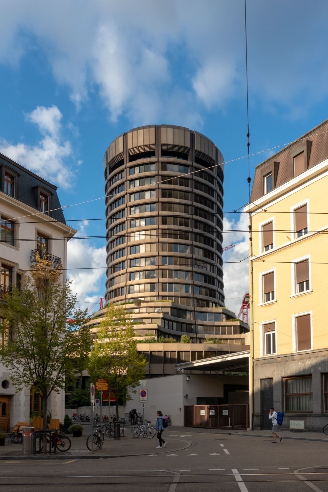
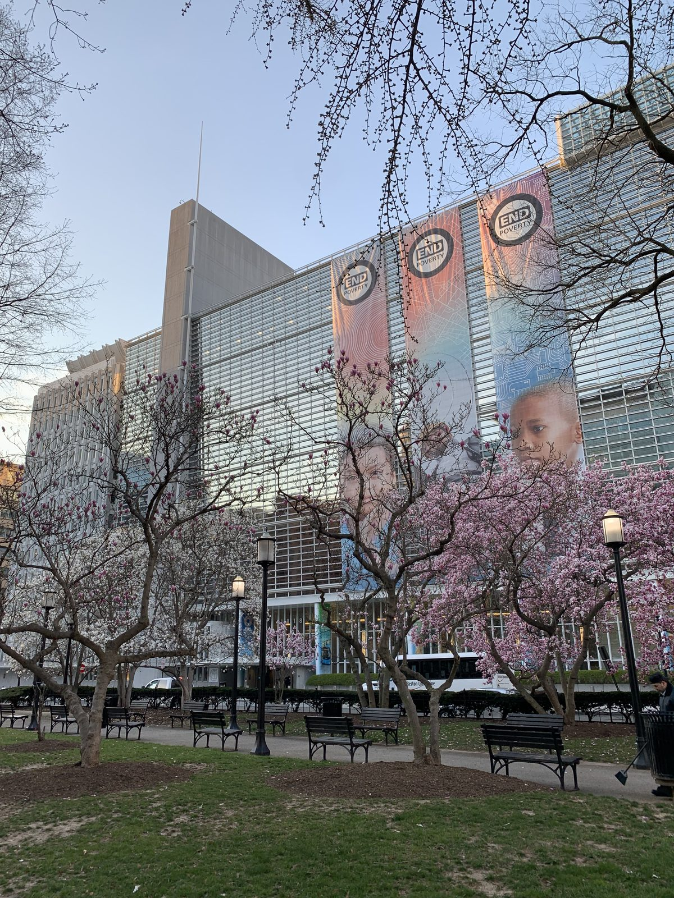

Older Than the United Nations, and Never Asked to Join
SEPTEMBER 8, 2026
I get these three mixed up more often than I'd like to admit, and the specific place I trip is always the same one: I know the IMF has something to do with a reserve asset called the Special Drawing Right, and I know the BIS is also some kind of central-bank clearinghouse in Switzerland, and for years I could not have told you with any confidence which of the two actually sets the SDR's daily rate. (It's the IMF. Write that down now, because the rest of this entry is basically the long version of that one fact.) Add the World Bank into the mix — three institutions, three Bretton-Woods-adjacent-sounding names, three headquarters full of economists — and the whole cluster blurs into "the people who run the world's money," which is both close enough to get you through a dinner-party sentence and wrong enough to matter if you're actually trying to understand how any of it works. So I sat down and untangled it properly. The most interesting thing I found wasn't a job description — it was that one of these three is old enough to have never been asked to join the United Nations in the first place, because when it was founded, the United Nations did not exist yet.
Three Buildings, Three Owners
Start with the shape of each institution, because the shape tells you almost everything about the job. The Bank for International Settlements is, structurally, a bank — a real one, with a balance sheet, deposits, and shareholders. Its shareholders are central banks: 63 of them today, from the Federal Reserve to the Bank of Japan to the Swiss National Bank, each holding shares the way a commercial bank's shareholders hold shares. It is headquartered in a distinctive round tower in Basel, Switzerland, nicknamed locally the "Tower of Basel," standing just under 70 meters over the city's main train station.

The International Monetary Fund and the World Bank are a different shape entirely: they are membership organizations of national governments, not banks owned by banks. Every country that joins subscribes a "quota" — effectively a capital contribution sized to that country's economic weight — and that quota buys both borrowing capacity and voting power. Both are headquartered a few blocks apart in Washington, D.C.'s Foggy Bottom neighborhood, close enough that their staffs walk to joint meetings.
Three different shapes already tell you three different things: a bank owned by 63 central banks answers to those central banks alone; a membership organization of 190 governments answers, in principle, to a much wider and more political constituency; and being headquartered in Washington versus Basel isn't just geography, it's a hint about which one grew up inside the post-1945 order the United States helped build, and which one didn't.
Basel Came First — Fourteen Years Before the Others, and Not From the Same Root
The BIS is the oldest of the three by a wide margin, and it wasn't built for anything resembling today's job. It was created under the Hague Agreements of January 1930, as the administrative machinery for the Young Plan — the scheme for collecting and distributing Germany's World War I reparations payments under the Treaty of Versailles. It opened for business on May 17, 1930, with the narrow job of collecting reparation annuities and passing them along to the receiving governments. That mission barely outlived the decade: reparations collapsed in the early 1930s Depression and were suspended for good in 1932. But the bank didn't close. The central banks that had set it up as a reparations clearinghouse kept it running as something more useful — a place for their own governors to meet, settle balances with each other, and coordinate, which is the job it has done ever since (see the BIS's own account of its founding).
Here's the detail that actually surprised me once I checked the dates against each other rather than trusting the vague sense that "these are all the same era of institution": the United Nations was founded in 1945. The BIS opened its doors in 1930 — fifteen years earlier, under the League of Nations era, in a world that had no UN to be a specialized agency of. It was never offered UN membership, never negotiated a relationship agreement with the UN the way the IMF and World Bank did, and today reports to nobody but its own member central banks and its own Basel-based board. It isn't a rebel or a holdout from that system — it simply predates the system by a decade and a half, and nothing has ever folded it in since.
Bretton Woods, and the Two Institutions Born as a Pair
The IMF and the World Bank, by contrast, were born together, in the same room, three weeks before the United Nations itself existed as anything more than a wartime alliance's plan. Delegates from 44 Allied nations met at the Mount Washington Hotel in Bretton Woods, New Hampshire, from July 1 to 22, 1944 — the United Nations Monetary and Financial Conference, the event everyone now just calls "Bretton Woods" — to design the postwar monetary order before the war had even ended. Out of that conference came two new institutions with deliberately complementary jobs (see the Library of Congress's account of the conference): the IMF was built to keep currencies stable and help countries through short-term balance-of-payments trouble, while what's now called the World Bank — originally just the International Bank for Reconstruction and Development, or IBRD — was built to fund long-term reconstruction and development, starting with a continent in ruins.
The World Bank didn't wait long to prove which job it had signed up for. Before it had even formally opened its doors on June 25, 1946, France had already sent a one-page letter asking for $500 million to start rebuilding. The Bank's first-ever loan — $250 million, signed May 9, 1947 — went to France's Crédit National for exactly that (see the World Bank's own digitized records of that first loan). The IMF, meanwhile, spent its early years doing what its charter actually described: monitoring exchange rates under the Bretton Woods fixed-rate system and standing ready to lend reserves to a member running short. Same conference, same three weeks, two institutions built to do two different halves of one postwar job.
"Specialized Agency of the UN" Sounds Like Control. In Practice, It Mostly Isn't.
This is the part I had backwards for longest: I assumed that because the IMF and World Bank are routinely described as "specialized agencies of the United Nations," the UN General Assembly must have some real say over what they do. It doesn't, really — and the 1947 negotiation that created that relationship is itself the evidence. The UN's Economic and Social Council approved a relationship agreement with the World Bank in 1947, and the UN General Assembly ratified it that November, formally making the Bank a UN specialized agency. But the Bank had insisted, at its own request, on language preserving its status as an "independent international organization" — and got it. The IMF's relationship agreement, negotiated the same year, carries the same shape. Both institutions send reports to the UN's Economic and Social Council, both get invited to the same diplomatic circuit, and neither takes instructions from it. Their real governing bodies are their own boards, elected and weighted by the quota system, not the UN's one-country-one-vote General Assembly.
That quota-weighted voting is worth sitting with for a second, because it's a genuinely different governance model from the UN's own. At the IMF, the United States holds roughly 17% of the vote — not a majority, but enough to matter, because the Fund's Articles of Agreement require an 85% supermajority for the most consequential decisions (changing quotas, amending the Articles themselves). Seventeen percent is exactly enough to block anything that needs 85% to pass. That's not an accident of arithmetic; it's a deliberate design feature of the postwar order, and it's the kind of structural fact you'd never guess from the phrase "specialized agency of the United Nations."

The BIS skips this whole conversation, because it was never invited to have it. It has no UN relationship agreement of any kind — not a looser one, not an unusual one, none. It operates under its own headquarters agreement with Switzerland, which grants it certain legal immunities similar in spirit to what a UN agency gets, but that immunity comes from a bilateral deal with the Swiss government, not from any UN instrument. Its governing board is drawn entirely from its member central banks' own governors. If you're looking for the single cleanest way to keep these three straight: the IMF and the World Bank are UN-adjacent membership organizations of governments, built at the same conference for two complementary jobs; the BIS is a private-law bank owned by central banks, built fifteen years earlier for an entirely different, now-defunct reason, and never brought into the UN system at all.
What Each One Actually Does, Day to Day
With the org chart sorted, the jobs are easier to hold onto:
The BIS is, first, literally a bank for central banks — it takes deposits from them, conducts gold and foreign-exchange transactions on their behalf, and gives them a place to settle balances with each other. Second, and probably more consequentially for anyone outside a central bank, it's the landlord and host for the committees that actually write global banking regulation. The Basel Committee on Banking Supervision — the body behind "Basel III," the capital and liquidity rules that shape how much cushion your own bank has to hold — has its secretariat inside the BIS building, even though the Committee is technically a separate body the BIS merely hosts. Since 2009 the BIS has also hosted the Financial Stability Board, the G20's coordinating body for global financial regulation. None of that regulatory output is binding law on its own — Basel III becomes real only when individual countries write it into their own statutes — but it's the closest thing the world has to a single table where that rulebook gets drafted.
The IMF does three things, none of which is "writing bank capital rules." It watches: under "Article IV consultations," it reviews every member's economy roughly once a year and publishes an assessment, a soft-power surveillance function most people never hear about because it rarely makes news on its own. It lends: when a member runs short of foreign reserves, the IMF can extend credit, historically attached to policy conditions the borrowing government has to accept — the "IMF austerity" headlines usually trace back to this function. And it administers the Special Drawing Right, which gets its own section below, because it's the piece that actually started this whole entry.
The World Bank is really a group of five affiliated institutions now, not one bank, each aimed at a different slice of development finance: the original IBRD lends to middle-income and creditworthy poorer governments; the International Development Association (IDA) gives interest-free credit and outright grants to the very poorest countries; the International Finance Corporation (IFC) invests directly in private companies in developing economies; the Multilateral Investment Guarantee Agency (MIGA) sells political-risk insurance to investors going into unstable markets; and the International Centre for Settlement of Investment Disputes (ICSID) arbitrates disputes between foreign investors and host governments. The common thread across all five is time horizon and purpose: long-term project and development finance, not the IMF's short-term balance-of-payments rescue lending.
The SDR, Untangled
Now the piece that started this. A Special Drawing Right is not a currency. You cannot walk into a shop anywhere on earth and pay in SDRs, and the IMF is explicit about this: it describes the SDR as "potentially a claim on the freely usable currencies of IMF members," not a currency and not a claim on the IMF itself (see the IMF's own SDR FAQ). Think of it less as money and more as a standardized IOU that only central banks and a short list of international institutions are allowed to hold, created in 1969 to supplement the world's official reserves when gold and dollars alone weren't stretching far enough to cover growing global trade.
Its value is defined by a basket of five currencies, reweighted every five years by the IMF's Executive Board. The most recent review, completed in May 2022 and effective that August, set the weights at 43.38% U.S. dollar, 29.31% euro, 12.28% Chinese renminbi, 7.59% Japanese yen, and 7.44% British pound (see the IMF's press release on the 2022 valuation review). The IMF publishes a fresh SDR-to-dollar exchange rate every single business day, computed straight off that basket against live market rates. That daily computation is entirely an IMF function. The BIS has no role in it whatsoever — it doesn't sit on the valuation review, doesn't publish the rate, and isn't consulted on the basket weights. If you take away exactly one fact from this entry, this is the one I came here to nail down: the IMF sets the SDR; the BIS regulates something else entirely.
Who can actually hold and use one is narrower than most people assume. SDRs are allocated only to IMF member countries that opt into the Fund's SDR Department (nearly all 190 do), in proportion to each member's quota — the same quota figure that sets voting power also sets how many SDRs a country receives when a new general allocation happens, like the roughly $650 billion equivalent allocation in 2021 in response to the pandemic. A short additional list of "prescribed holders" — a small set of multilateral institutions, the BIS itself among them — is also permitted to hold and trade SDRs, but private companies, banks that aren't central banks, and individuals never can. When a country actually needs to use its SDRs — say, to cover a balance-of-payments shortfall — it doesn't spend them directly; it exchanges them, either through a voluntary arrangement with another member willing to provide hard currency, or through an IMF-arranged "designation" that obliges a stronger-reserve member to take the SDRs off its hands in return for real dollars, euros, or yen. The asset only becomes spendable at that exchange step — which is exactly why "a claim on other members' currencies" is a more accurate description than "a form of money."
Three Jobs, Three Owners, One Habit of Getting Conflated
Laid out side by side, the confusion I started with makes a certain kind of sense: all three institutions sit in the same general neighborhood of "big, technical, international, and full of economists," and two of the three even share a founding conference. But the actual shape underneath is three genuinely distinct things — a central-bank-owned bank fifteen years older than the UN and never part of its system, writing the regulatory rulebook commercial banks eventually have to follow; a government-membership fund born at Bretton Woods to watch exchange rates, lend against short-term trouble, and set the daily value of a reserve asset almost nobody outside a central bank ever touches; and a five-part development lender, born at the same conference for the opposite time horizon, financing decades-long projects rather than balance-of-payments emergencies. None of the three runs the world's money in any single-headed sense the phrase implies. They run three different pieces of it, report to three different constituencies, and — apart from the SDR basket the IMF alone sets the rate on — mostly don't overlap at all.
Writing this entry sent me looking for a live version of some of these numbers — what the SDR's component currencies are actually worth today, how much money the world's major economies actually have in circulation, who holds the reserves the IMF spends its surveillance function watching. That turned into its own standing page: Money Worldwide tracks exchange rates, money supply, FX and gold reserves, and global government debt against GDP — with Bitcoin's own market cap set alongside all four, the same "where does it rank" question this publication's other boards already ask of gold and the mega-caps.